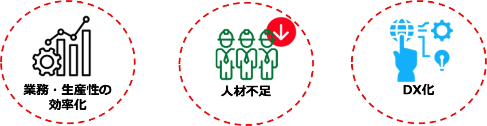

4-3-2. 経営者が重要視すべき3つのポイント
ポイント1：ビジネスの継続・発展にはITの活用が不可欠
中小企業にとって、業務や生産の効率化、人材確保は重要な課題です。業務・生産工程などの運用コストの削減・効率化のために、ITの活用が不可欠になっています。また近年では、競争力維持・強化のために、デジタルトランスフォーメーション（DX）を進めることが求められており、ITの活用が必須になっています。
中小企業の課題
ポイント2：ITの活用にはサイバー攻撃への対策が必要
ITの活用が不可欠な中、サイバーセキュリティ対策を行うことが必須となっています。サイバーセキュリティ対策を怠ることで、金銭・顧客の喪失、法的責任、事業の中断・停止、従業員への悪影響など、経営を揺るがすような被害を引き起こす可能性があります。近年は、サプライチェーンを介して、セキュリティ対策が不十分な企業を踏み台にして攻撃されることもあります。攻撃を受けた企業だけが責任を追及されるだけでなく、踏み台にされた企業も加害者として責任を追及されてしまいます。
事例：サプライチェーン攻撃による情報流出被害
保険業界
某保険会社は、顧客情報の一部が流出したことを公表し、謝罪しました。情報流出の原因としては、外部委託先の企業のサーバが不正アクセスを受けたことです。顧客の氏名、性別、生年月日、メールアドレスなどの個人情報が数十万人分漏えいしてしまいました。その結果、数億円以上の損害や多くのお客様に対する信頼を低下させてしまう事態となりました。このようにサプライチェーンを介した攻撃では、自社が直接サイバー攻撃を受けていなくても、間接的に被害にあってしまいます。
ポイント3：サイバーセキュリティ対策は経営者が自ら実行
経営者は自ら主体となって指揮をとり、サイバーセキュリティ対策を行う必要があります。理由は、主に2つあります。1つ目は、セキュリティ対策を行うにあたり、サイバー攻撃のリスクの許容範囲をどの程度にするのか、セキュリティ投資をどこまで行うのかなど、経営者による経営判断が必要になるからです。2つ目は、セキュリティインシデントが発生した際に、経営者が「法的責任」や「社会的責任」を負わなければならないからです。経営者は民法や会社法により、善管注意義務という「取締役として期待される水準の注意をもって業務を行う義務」を負い、その任務を怠った際に生じた損害を株式会社に対して賠償する責任「任務懈怠」を負うことが規定されています。そのため、サイバーセキュリティ対策にベストを尽くさなかった結果、サイバー攻撃による情報漏えいや事業停止が起き、第三者に損害が生じた場合、善管注意義務違反や任務懈怠に基づく損害賠償責任を問われてしまいます。
法令
条項
要約
民法
第415条 債務不履行による損害賠償責任
サイバー攻撃により仕事が停滞した場合、会社及び第三者に対する、契約違反による賠償義務を負う。
第644条 取締役の善管注意義務違反
企業のセキュリティ体制が規模や業務内容に鑑みて適切でなく、サイバー攻撃により企業や第三者に損害が発生した場合、取締役は会社に対して、善管注意義務違反による賠償義務を負う。
第562条 契約不適合責任
請負契約の仕事の目的物（開発システムなど）について、その種類や品質が契約内容に適合しないことが仕事の完成後に判明した場合、会社及び第三者に対する契約不適合となる。
第709条 不法行為による損害賠償
第715条 使用者などの責任
故意または過失によって他人の権利または法律上保護される利益を侵害した者は、これによって生じた損害を賠償する義務を負う。
会社法
第330条 取締役の善管注意義務違反
第423条第1項 任務懈怠による損害賠償責任
第429条第1項 第三者に対する注意義務違反
企業のセキュリティ体制が規模や業務内容に鑑みて適切でなく、サイバー攻撃により企業や第三者に損害が発生した場合、取締役は会社に対する、善管注意義務違反による任務懈怠（けたい）に基づく損害賠償責任を負う。
図25. 情報セキュリティ対策が不備の場合に責任追及の根拠とされる主な法律
（出典）IPA 「中小企業の情報セキュリティ対策ガイドライン 第3.1版」から抜粋
会社法の第三者責任や民法の不法行為責任が認められると、経営者が個人として損害賠償責任を負う場合もあります。この他にも、法律によっては違反などが発生した場合、経営者だけでなく、取締役、担当者に対しても刑罰が科せられることもあります。上記の事態を引き起こさないためにも、サイバーセキュリティ対策は経営者が主体となって取組むことが大切です。